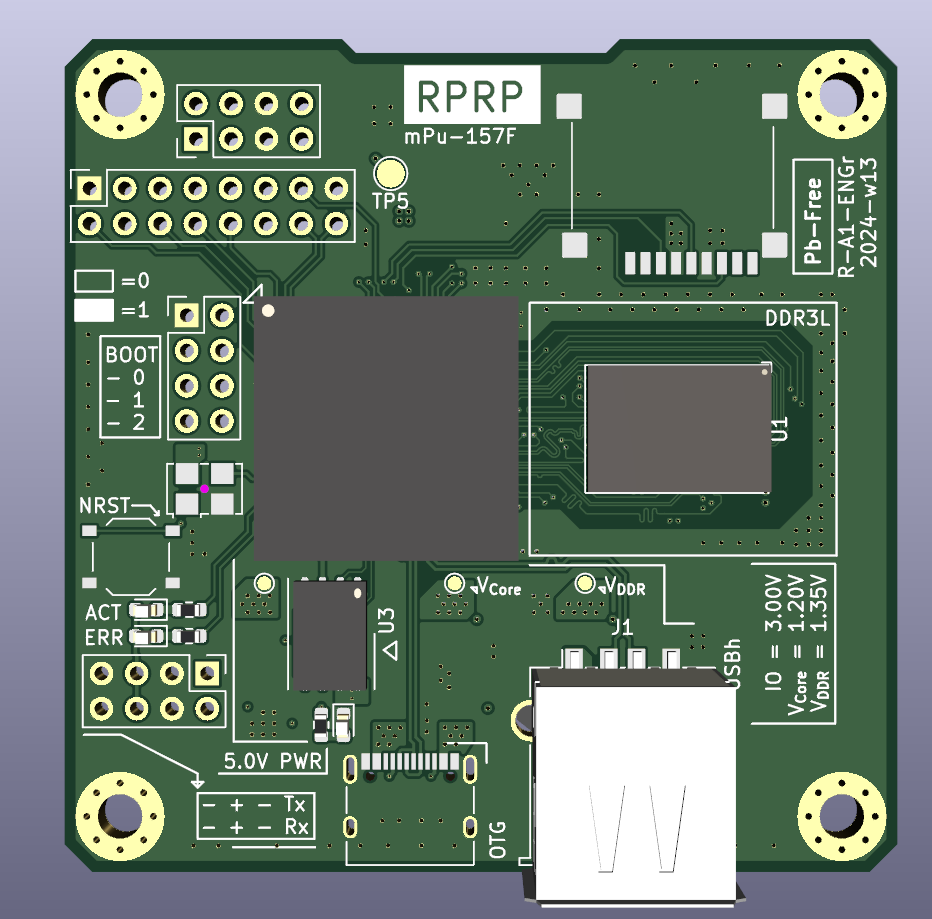
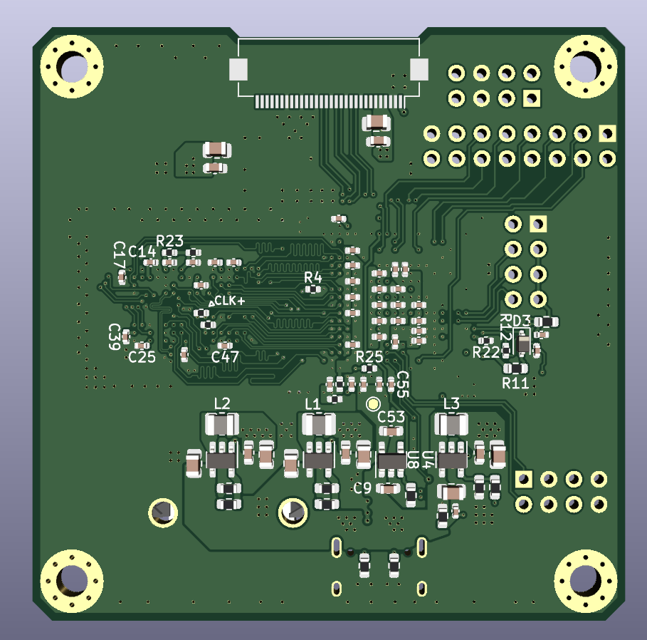
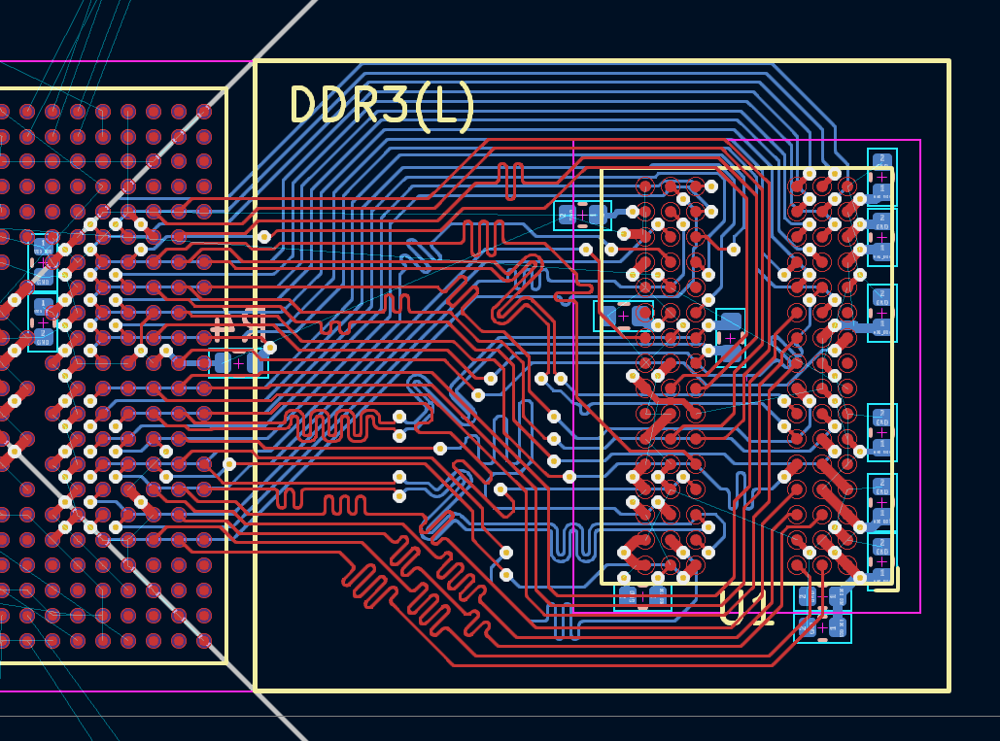
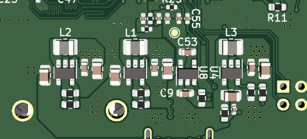

# Project STM32MP157F Dev Board (SBC)
This is a simple intro design to embedded linux & SBC. Since I have no previous experience with making such a complex design, many adjustments and simplifications are made.
This board uses the (rather new) STM32MP157F, with an Dual Cortex-A7 core running at 800MHz. This SoC requires an off-chip DDR3/DDR3L RAM, which increases difficulties in routing. However, the chip has an option in LFBGA448 (18x18mm) package, with 0.8mm pitch. Also, DDR allows swapping bits inside banks, and also the banks (for 16 bits), which allows a bit easier routing. The address pins still have to be in order.
The reason I chose ST (which is not a key player yet in the microprocess field) for this project is because I can source it rather easily. Also, I have always used STM32 MCU for my generic projects (Ex. The CIS driver), which gave some confidence on getting this MPU to work.
(Notes) Since the process of PCB layout for Rev 1 was not recorded, some images are adapted from Rev 2.
 

DDR3 routing for Rev 2
This MPU has no SIP RAM, so an external DDR RAM was required to run linux. ST gave three options: DDR3(L), LPDDR2, LPDDR3. Since DDR3L is the most common choice for industrial embedded linux applications, I decided to layout that part first. Compared to MCUs, DDR3 is rather in the fast domain, requiring many considerations - length matching, impedence, differential signals etc. For this first design - just routing out the tracks and trying to length match was prioritized over impedance matching. I hope the powerful on-die termination engine can solve the potential impedance issues.
DDR3 allows swapping of bits within the same byte, and the whole two bytes (remember to swap the DQS and byte clock!). My attempt for routing the signals was first sorting out the address bits, which cannot be swapped, along with the main differential clock (CLK+ / CLK-). The data bits are then swapped against each other until a smooth fanout was mapped to both of the chips. Length matching with the Kicad built-in tools (and some manual rework) is done at the end.
There are many options for the flash storage. The STM32MP1 supports SD card IO, EMMC, classical parallel NAND flash (the very long TSOPs seen in routers), and SPI NAND/NOR Flash. All of these interfaces can be used to boot the system, selected by 3 boot pins - BOOT0/1/2. I choose an 1Gbit SPI NAND flash since its compact and relatively cheap, but still allows enough space to save the firmware.

ST has a specialized PMIC for the MPU chips. In this project however, discrete DC-DC are used with the guidelines from one of the appnotes. It requires 4 discrete rails: VDDCore at 1.2V for the CPU, VDDDDR at 1.35V for the DDR3L interface, VDD_USB at 3.3V for some simple but required power sequence of the USB part, VDD at 3.0V for everything else. The chip has some integrated LDOs powering special sections such as the MIPI-DSI, which saves some work.